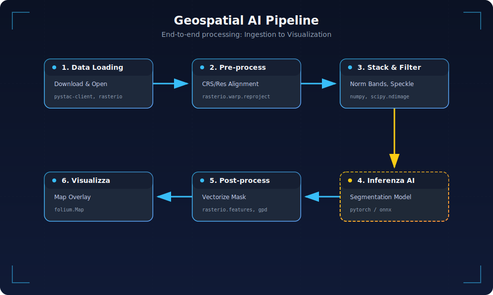

GeoAI Stack: Where to start to become a GeoAI engineer?
Second installment of our long journey to become a GeoAI engineer. Last time we described very generally what an AI engineer does and what differentiates them.
Now let's understand what an aspiring GeoAI engineer needs to get started, namely the tools, datasets, and necessary setup.
1. Architectural Overview of the Geospatial AI Stack
Let's start with the main objective and keep it in mind.
Objective: Integrate Language (LLM) models and Geospatial Vision pipelines in a reproducible environment, from local development to production.
The typical architecture combines:
- Geospatial data ingestion: access to optical satellite imagery (e.g., Sentinel-2) and SAR radar (e.g., Sentinel-1) via STAC/COG catalogs (Planetary Computer, Earth Data, etc.). We will discuss this in detail later.
- Pre-processing and remote sensing analysis: Python pipelines to read, align, and process large rasters (with rasterio/GDAL, rioxarray/dask for voluminous data) and vectors (with geopandas/shapely). This produces features such as damage maps, flood extent, extracted buildings, etc.
- Vision and geospatial models: application of specialized deep learning models on pre-processed data. For example, IBM used U-Net in one of its research activities for damage segmentation post-natural disaster. Or, models derived from SegFormer for change detection, such as Open-CD.
Libraries like TorchGeo provide ready-to-use geospatial-specific datasets and pre-trained models.
 Figure 1 – U-Net architecture with encoder/decoder and skip connection for segmenting damage and classes in satellite images.
Figure 1 – U-Net architecture with encoder/decoder and skip connection for segmenting damage and classes in satellite images.
 Figure 2 – TorchGeo collects ready-to-use datasets and pre-trained models designed for geospatial computer vision scenarios.
Figure 2 – TorchGeo collects ready-to-use datasets and pre-trained models designed for geospatial computer vision scenarios.
LLM/RAG Integration: a Retrieval-Augmented Generation (RAG) module connects geospatial results with an LLM (e.g., GPT-5 or Mistral Large) to enable Q&A and reporting. The LLM can draw upon updated knowledge bases (documents, place descriptions) in addition to extracted data. This reduces the problem of hallucinations by providing verifiable context. For example, a user can ask "How many buildings were destroyed by the earthquake in Turkey?" and the system uses data extracted from the CV model + textual descriptions to generate an answer citing sources.
Agents and automation: agent-based components (built with frameworks like LangChain, Haystack, or Datapizza-AI) orchestrate the steps and calls to specific tools.
Specifically, an agent can:- query a geospatial database to find relevant post-disaster images;
- execute the computer vision model to obtain metrics (number of damaged buildings, flooded area, etc.);
- call the LLM to explain the results.
This enables complex "question -> actions -> answer" workflows in a modular way.
Services and deployment: everything is containerized (Docker) and can be exposed via REST APIs (e.g., with FastAPI) or lightweight graphical interfaces. For example, a Streamlit dashboard can display interactive maps with damage layers and offer an LLM chat for questions about the disaster.
Local vs. Production Architecture
When developing the solution, it is good practice to work on test datasets (for example, on a few representative satellite scenes) using notebooks (like Jupyter Lab, Colab, etc.) or modular scripts (in src/).
In production, however, individual components are orchestrated into microservices: there can be a service for geospatial analysis (e.g., calculating risk maps) and a service for the LLM (e.g., generating responses), with logging and monitoring. Raw data in this case, such as images, resides in storage (either a local file system or a cloud bucket), while intermediate results, such as generated COGs (Cloud Optimized GeoTIFFs), shapefiles, vector embeddings, can be cached to speed up repeated requests.
I would like to point out that language models are typically used via external APIs (OpenAI, etc.) or, in the case of optimized open-source models (e.g., gemma3n 4B), inference occurs on-premise.
As I read in this paper, this hybrid AI + GIS architecture overcomes the limitations of individual systems: classic GIS systems struggle with natural language input, while "Large Language Models show strong linguistic capabilities but struggle with spatial reasoning and geospatial ground truth". By combining them, we obtain a system where visual models provide "eyes" and structured data, and LLMs provide "linguistic reasoning" on such data, with the ability to consult real-time knowledge bases. In summary, the stack embraces the full cycle: Data (Geo) → AI Vision → Knowledge → LLM. The following figure illustrates the key components and data flow in the system (from data collection to user response):

Figure 3 – Summary diagram of the GeoAI stack connecting geospatial ingestion and analysis, CV models, RAG/LLM components, and agent-orchestrated deployment services.
2. Map of Tools and Resources (2025)
In this chapter, we will look at the main options for each aspect of the stack: from Python environment management to development tools, covering container basics, open geospatial datasets, and key libraries. The goal will not only be to understand all of this but also to keep in mind a comparison of features, outlining the advantages of each method.
2.1 Python Environment Management (venv, conda, poetry, etc.)
One thing we all agree on: to have a solid foundation, a reproducible Python environment is necessary, with all dependencies, including GPU packages and geospatial libraries.
The following table compares the most common approaches today (in 2025):
| Approach | Type | Advantages (pros) | Disadvantages (cons) | Update |
|---|---|---|---|---|
| pip + venv | Installer + isolated env | Simple and native; fast direct installation | Solver no longer greedy but still less powerful than SAT solvers; no native lockfile; requires manual removal of unused sub-deps | pip 25.3 (2025) |
| conda / mamba | Package manager with C++ SAT solver | Manages non-Python libraries (e.g., GDAL, PROJ) in isolated envs; complete and fast resolution thanks to the libmamba solver | Heavy base environment (hundreds MB); lacks out-of-the-box lockfile; sometimes requires mixing pip → possible conflicts | Conda 25.9.1 (2025) |
| Poetry | PyPI manager with lockfile | Uses unified pyproject.toml standard; generates multi-platform lockfile for reproducibility; automatically manages virtual env | Python-based solver relatively slow on large reqs (DFS backtracking); voluminous lockfile; beware of excessive constraints (^version) which can cause conflicts in large teams. | Poetry 2.1 (2025) |
| PDM / Hatch | Modern PyPI managers | PDM supports PEP 582 (local environment without activate); Hatch also acts as a complete build system and allows multi-version Python testing | Less common than the pip/conda/poetry triad; Hatch has a higher learning curve and focuses on packaging (not just env) | PDM 2.26 (2025), Hatch 1.15 (2025) |
| uv (Astral) | Unified all-in-one tool (Rust) | Extremely fast (10-100× pip) thanks to its Rust core; replaces pip, pipx, poetry, pyenv with a single tool; universal lockfile support and multi-project workspace; transparent integration with existing venvs (you can activate uv, then use normal pip if you want) | API and CLI still unstable (young project); emerging community | uv 0.9.9 (2025) |
| pixi (prefix.dev) | Conda-like package manager (Rust) | Speed |
New ecosystem (releases <1 year); fewer precompiled packages compared to conda-forge; some commands are still evolving | pixi 0.59 (2025) |
| pyenv | Python version manager | Allows easy installation and switching of different Python versions per project (useful for multi-version or legacy testing) | Does not manage packages; used in combination with venv/poetry; if used globally, can cause confusion about active versions | pyenv 2.6.12 (2025) |
Table notes: mamba is the C++ implementation of conda. Today, conda itself incorporates libmamba by default, so the two converge in speed. In data science environments, conda/mamba remains popular for its ease with complex scientific packages, while in production, pip/poetry is often preferred to avoid extra dependencies and have more control. Emerging tools like uv and pixi aim to unify the best of both worlds (speed and completeness). For example, uv is developed in Rust by the creators of Ruff and aims to become the "Cargo for Python" (a single tool for managing Python versions, dependencies, virtualenvs, publishing). Pixi, created by the mamba team, is a drop-in conda replacement written in Rust: it uses uv to resolve pip packages, generates lockfiles, and removes the need for a conda base environment, drastically improving speed and ergonomics for bringing conda environments to production.
GPU/Geo Reproducibility
For a local AI/RS project on GPU, conda often offers the simplest path (e.g., conda install pytorch cudatoolkit gdal rasterio in an env) because it manages compatible "binaries" (CUDA, GDAL). Alternatively, in containerized environments, you can opt for pip + Docker using base images with appropriate drivers (we'll discuss this shortly).
In all cases, it is recommended to pin versions in a lockfile (for example, using poetry.lock) or requirements files with hashes, and document the setup (e.g., by providing a conda environment.yml + pip requirements.txt for safety).
An ideal project layout includes a structure similar to:
proj-root/
├── src/ # application code (main package)
├── notebooks/ # exploratory Jupyter notebooks
├── data/ # raw or sample data (gitignored if large)
├── models/ # saved models or weights
├── tests/ # unit/integrated tests
├── configs/ # configs for Hydra/pydantic (e.g., dev.yaml, prod.yaml)
├── Dockerfile # container definition
├── pyproject.toml # package/dep specifications (poetry/pdm)
├── requirements.txt # dependencies (if pip)
├── Makefile # useful commands (setup, run, lint, test, deploy)
└── README.md # project documentationThis organization partly follows the Cookiecutter Data Science model (to clearly separate code, data, docs) and facilitates the transition from local development to production: the code is packaged (in src/ with an optional _init_.py), tests ensure functionality, and separate configs/secrets per environment allow for consistent deployments.
Let's say it's good practice, costs nothing, and provides an order that is useful both to you and to those who work with you.
2.2 Essential AI Engineer Tooling
To ensure code quality and development speed, every developer adopts a set of lightweight DevOps/MLOps tools, which we will look at shortly.
Before giving advice on this, I will provide some definitions that may be obvious to some but perhaps not to others.
Linting is an automatic check of source code for:
- potential errors: unused variables, suspicious syntax, common bugs
- style issues: formatting, inconsistent names, unrespected conventions.
- "code smell": patterns that are not errors but can cause problems later In practice, files are analyzed without executing them, and points to fix are flagged, often with suggestions or automatic corrections.
- Linting & Format: Black for automatic code formatting (opinionated, PEP8) and Ruff for ultra-fast linting in Rust. Ruff includes hundreds of rules (replaces flake8, isort, etc.) and automatically fixes many issues. It has practically supplanted traditional linters in a short time thanks to its speed and coverage.
Tip: configure Black and Ruff to avoid overlapping rules (e.g., disable rules in Ruff that Black already handles, such as line length) - this can be done by centralizing the configuration in pyproject.toml.
- Type Checking: use static typing to prevent bugs. Mypy is the standard for type-checking in Python; alternatively, Pyright (integrated into VSCode/Pylance) offers very fast incremental analysis during writing. Setting a "strict" level (e.g.,
warn_unused_configs,disallow_untyped_defsin mypy) helps maintain robust code. - Testing: Pytest is the de facto standard for unit and functional tests in Python. Organize tests in
tests/and perhaps use useful plugins: e.g., pytest-snapshot (or Syrupy) for snapshot testing of complex outputs (automatically compares current output with a previously saved one). This can be convenient for validating, for example, API response JSON or raster analysis results. For geospatial pipelines, it might be useful to generate small synthetic datasets to test functions (e.g., create a 100x100 raster and a known geometry and verify that the overlay produces expected results). - Pre-commit hooks: configure pre-commit (file
.pre-commit-config.yaml) to automatically run quality tools before each commit. A recommended set of hooks: black, ruff, mypy, isort (if not using ruff for import sorting), end-of-file-fixer and trailing-whitespace (simple cleanups), possibly nbstripout or nbqa to normalize notebooks. This ensures that every commit adheres to code style standards and passes static tests. For example, a combined ruff/black hook makes the code consistent - a developer notes "Ruff + Black + isort configured together provide friction-free quality" in CI and editor. - Minimal CI/CD: set up a simple GitHub Action that on every push runs: lint (ruff/black), type-check (mypy), and tests (pytest) on an environment matrix (at least Python 3.x). This automates quality control. For ML projects, a test on sample data can be included (e.g., run inference on a small image) to ensure that pipelines and models work. A minimal YAML workflow would include steps to install dependencies (using poetry/mamba for speed in CI) and then
pre-commit run --all-filesfollowed bypytest. - Notebooks and collaboration: use JupyterLab 4 (modern, supports plugins and real-time collaboration) or the VSCode notebook interface for prototyping. In shared or cloud contexts: Deepnote, Google Colab, or JupyterHub offer ready-to-use environments (Colab, for example, provides limited free GPUs). It's good practice to keep notebooks and code synchronized: Jupytext (notebooks as paired scripts) can be used to easily version them. To visualize geospatial data in notebooks, tools like folium (interactive Leaflet maps) or ipyleaflet/leafmap allow direct visualization of tiles, shapefiles, and model results (this will be explored in a couple of sections).
Tip: configure all these tools from the start. For example, add black, ruff, isort, mypy with consistent configuration (same line-length, etc.) to pyproject.toml. Install pre-commit and activate it (
pre-commit install) so that every git commit triggers the checks. These automations make development "no drama": the developer can focus on AI/Geo logic, while the tools keep the code clean and functional.
Does all this make sense today with AI?
In recent years, the introduction of AI into development tools has revolutionized how we write, maintain, and version code. Yet, this revolution has not eliminated the need for good practices: it has simply shifted the focus of what truly matters. AI accelerates, suggests, generates, but does not guarantee quality and structural consistency. For this reason, many classic tools not only remain relevant but, in some cases, become more important than before.
Let's start with linting and formatting. It's no longer a matter of aesthetics, but of having more substance.
Formatters like Black remain indispensable. Even if AI produces already readable code, consistent formatting is essential for clean diffs and friction-free reviews.
As for linters, tools like Ruff become fundamental not for aesthetics (which AI already handles well), but for catching errors, unused imports, dead code, or risky patterns. The goal is not to make the code "prettier," but to prevent bugs introduced by somewhat overly optimistic generations.
Let's move on to the guardrails introduced by type checking.
With AI proposing complex code or plausible but not always correct functions, tools like Mypy or Pyright become essential as a safety net. Static typing is not just a quality measure, but a structural guide that AI itself uses to generate more precise solutions. In particular, in a project's core modules, a semi-strict type checking profile enormously reduces the risk of silent errors (I mean errors that are not visible now but emerge later).
Now let's analyze what I believe is the most important point: testing.
With well-structured tests and snapshot tests for complex outputs, it's possible to ensure that AI-driven optimizations or refactoring do not alter, shall we say, delicate behaviors.
We're almost at the end; now it's time for pre-commit, which I define as the sentinel between us and Git.
Pre-commit hooks continue to be useful as a final filter before code enters Git (here, by Git, I mean both GitHub and GitLab).
Black, Ruff, and some light cleanups like whitespace removal are often sufficient. Heavier tools, like Mypy, can remain in CI to avoid local slowdowns. In personal projects, you might even do without them, but in a team, it remains a mechanism that prevents small, unnecessary errors.
Finally, for independence and reproducibility, there's the classic CI/CD.
With AI facilitating the generation of entire code blocks, the probability of unintentionally destructive changes increases. A minimal CI pipeline, including linting, type checking, and testing, ensures that every push is valid in a clean and controlled environment.
This is a fundamental step to prevent AI-generated code from breaking remote functions or introducing regressions that are difficult to identify.
In conclusion, in a world where AI supports development, "code safety" tools don't disappear: they reposition themselves. Black standardizes, Ruff protects, Mypy or Pyright guide, Pytest ensures stability, CI guarantees reproducibility.
So AI doesn't eliminate the need for these practices. On the contrary, it makes them even more relevant because it increases the volume and speed of code produced.
Quality is no longer just a matter of writing, but of the ecosystem. And in this ecosystem, AI is a powerful accelerator, but not a substitute!
2.3 Docker and AI+GEO Containerization
This is a part that is very dear to me (so much so that I want to dedicate an entire series to Docker).
Containerizing the app allows for standardizing the development environment (especially for native libraries and GPU drivers) and thus facilitating the deployment phase. We present two examples of optimized Dockerfiles, one for a lightweight LLM/RAG service, the other for a heavy geospatial pipeline, and a table of recommended base images.
Example 1: Dockerfile for LLM/RAG + FastAPI Service (CPU)
# Usiamo la versione di Python leggera con Debian 12 "bookworm"
FROM python:3.12-slim-bookworm as base
# Aggiorniamo e installiamo solo git, senza raccomandati, quindi puliamo la cache
RUN apt-get update \
&& apt-get install -y --no-install-recommends git \
&& rm -rf /var/lib/apt/lists/*
# Creiamo un utente non‑root per eseguire il servizio
RUN useradd -m appuser
# Impostiamo la cartella di lavoro
WORKDIR /app
# Installiamo una versione stabile di Poetry e configuriamo l’installazione dei pacchetti
RUN pip install --no-cache-dir poetry==1.8.2
# Copiamo i file di progetto e sfruttiamo la cache Docker per velocizzare gli aggiornamenti
COPY pyproject.toml poetry.lock ./
# Installiamo le dipendenze (solo di produzione) direttamente nel global site‑packages
RUN poetry config virtualenvs.create false \
&& poetry install --no-dev
# Copiamo il codice applicativo
COPY src/ ./src/
COPY main.py ./
# Eseguiamo come utente non root
USER appuser
# Avviamo Uvicorn esponendo la FastAPI all’esterno
CMD ["uvicorn", "main:app", "--host", "0.0.0.0", "--port", "8000"]
Note: Here we use python:3.12-slim (~50MB) because it's a good compromise between size and functionality, as it avoids issues arising from using Alpine. I decided to propose version 3.12 for maximum compatibility with other libraries.
Dependency installation is done in a separate layer by copying only pyproject/lock (to leverage Docker cache: if only the code changes and not the dependencies, all packages are not reinstalled).
Uvicorn serves the FastAPI app. This container is CPU-only (suitable for LLMs via external API or small models). If we wanted to include a local model (e.g., Transformers), it would be enough to add RUN pip install transformers or include it directly in poetry.
Example 2: Dockerfile for geospatial pipeline (with GDAL, optional GPU)
Let's now look at a more complex example, but also more suitable for a GeoAI engineer.
For complex geospatial pipelines (raster analysis, photogrammetry, deep learning on satellite images), an environment with many native libraries (GDAL, PROJ, Rasterio) and often GPU support is necessary.
# Stage 1 – builder with Miniconda and mamba
FROM continuumio/miniconda3:latest as builder
# The latest version of mamba is 2.3.3. Then we remove temporary files
RUN conda install -n base -c conda-forge mamba==2.3.3 \
&& conda clean -afy
# Copy the environment listing geospatial packages (Python 3.12, GDAL,
# Rasterio, Geopandas, etc.)
COPY environment.yaml /tmp/environment.yaml
# Update the base environment with the libraries specified in environment.yaml
RUN mamba env update -n base -f /tmp/environment.yaml \
&& conda clean -afy
# Install additional packages with pip (e.g., Raster Vision)
RUN pip install --no-cache-dir rastervision==0.31.2
# Stage 2 – production image with CUDA 13.0.2 support
FROM nvidia/cuda:13.0.2-runtime-ubuntu22.04 AS production
# Copy the conda installation from the builder
COPY --from=builder /opt/conda /opt/conda
# Update the PATH variable to include conda
ENV PATH="/opt/conda/bin:$PATH"
# Set the working directory
WORKDIR /app
# Copy the source code
COPY src/ ./src/
COPY entrypoint.py ./
# Pipeline startup command
CMD ["python", "entrypoint.py"]
As an environment.yaml file, you can use:
name: geoenv
channels:
- conda-forge
dependencies:
- python=3.12
- gdal=3.12 # GDAL 3.12 is available via OSGeo containers
- rasterio
- geopandas
- numpy
- pandas
- pyproj
- pip
- pip:
- rastervision==0.31.2
- torch==2.7.0We have considered an example here taken from a source from which, at the time, I also studied. I have tried to update it based on the library versions current as of this article's date.
In this multi-stage Dockerfile, we use the Miniconda image with mamba as a builder to resolve dependencies (in environment.yaml we specify, for example: gdal, rasterio, geopandas, pytorch, etc. with the conda-forge channel). This approach automatically manages native libraries (GEOS, PROJ, etc.), avoiding pip errors (e.g., pip install gdal would fail without GDAL dev installed).
In the second part, we start from a very slim nvidia CUDA runtime, which includes only the necessary drivers for PyTorch Tensor GPU.
We copy the conda installation from the builder, avoiding carrying over compilation layers. The result is a ready image with GPU support and geospatial libs.
Below is a table of common base images for various scenarios:
| Base Image | Content | Recommended Use |
|---|---|---|
| python:3.12-slim | Debian slim + Python 3.x | Lightweight Python services (APIs, agents) - minimal (<50MB) |
| continuumio/miniconda3 | Miniconda + conda (base env) | Data science/Full Geo; easy to install complex packages (e.g., GDAL) |
| mambaorg/micromamba | Micromamba in Alpine/CentOS | Build images with slim conda envs; ideal for multi-stage (downloads only required packages) |
| nvidia/cuda:13.0.2-runtime-ubuntu22.04 | CUDA libraries + base runtime | Add GPU support. To be used with pip/conda to install PyTorch/TF with compatible CUDA. Note that we are at version 13.0.2 now |
| pytorch/pytorch:2.7.0-cuda12.8-cudnn8-devel-ubuntu20.04 | Python + PyTorch 2.0 + pre-installed CUDA | DL training/inference on GPU - avoids manual CUDA/cuDNN configurations. However, it also includes various libs (image ~>10GB). |
| ghcr.io/osgeo/gdal:ubuntu-full-3.12.0 | Ubuntu + pre-compiled GDAL (full drivers) | Intensive GIS/RS pipelines. |
| jupyter/scipy-notebook | Python with Jupyter Notebook + SciPy stack | Ready-to-use notebook environments (CPU). Includes numpy, pandas, matplotlib, etc. Useful for interactive development, also on cloud (e.g., JupyterHub Docker Stacks). |
I don't exclude that there are
GPU Management
In on-prem deployment, enable GPU runtime with --gpus all on Docker run (using NVIDIA runtimes). In Kubernetes, use NVIDIA device plugins. If the host does not have a GPU, it will be sufficient for the image to still contain the correct libraries, and we can execute on CPU without errors, or delegate to Colab for GPU execution.
2.4 Managing "passwords" and configurations
Today, the word AI often calls for the word API, and consequently also credentials (or config) for services (e.g., Mapbox token, OpenAI key, database URL). It is fundamental not to embed these values in the source code, but to use config systems.
.env approach (local)
The simplest and most functional approach is certainly to use the classic .env file, which means putting the keys in a .env file excluded from git commands, and then loading it with python-dotenv.
For example, the config.py file could be written as:
from pydantic import BaseSettings
class Settings(BaseSettings):
openai_api_key: str
db_url: str
debug: bool = False
class Config:
env_file = ".env" # reads variables from .env
env_prefix = "MYAPP_" # optional: prefix required in env vars
settings = Settings()This code uses Pydantic BaseSettings. Using this code, at each startup, the application would read environment variables (or from the .env file) and build a settings object.
This offers the advantage of type validation (e.g., if db_url must be a URL, Pydantic can validate it). Defaults can be defined, and Pydantic automatically converts types (int, bool, etc.) and handles nested configurations. Pydantic is excellent when "the configuration structure is relatively simple and based on env var/.env", i.e., with few main parameters.
Furthermore, by integrating it with FastAPI, settings can be used as dependencies.
YAML/INI file approach + other classes
In larger projects or with many configurations, using YAML or TOML files for different environments can be organized. For example, a schema:
config/
|_default.yaml
|_dev.yaml
|_prod.yamlLibraries like Dynaconf support multi-layer configuration by loading multiple files and merging them based on an environment key.
Dynaconf allows defining configs in different formats (YAML, TOML, Python) and distinguishes development vs production contexts, in addition to supporting encrypted secrets. It is indicated when "complex, multi-source configurations with clear separation between environments are needed"
Alternatively, Hydra (by Facebook) allows composing configurations from modular files and overriding them via CLI. Hydra is common in research contexts for managing many parameters (e.g., model architecture, hyperparameters) and varying experiments by simply launching. Hydra automatically creates versioned output directories with the used config.
Practical config tips: If the app is relatively simple (few parameters and secrets), Pydantic BaseSettings offers simplicity and robustness (type-safe). If it grows in complexity (e.g., dozens of entries, multiple files), Dynaconf might be useful to avoid boilerplate and manage multiple sources. Hydra is excellent if you anticipate many run variations (typical in ML model training), but for a web service, it might be overkill.
Secret Management in Production
Never commit credentials. In cloud environments, use dedicated services: AWS Secrets Manager, GCP Secret Manager, Hashicorp Vault.
For example, on AWS, you can store the OPENAI_API_KEY and retrieve it dynamically in the ECS container or inject it as an environment variable through the configuration system (like Terraform).
Many CI/CD services (GitHub Actions, GitLab CI) offer an integrated vault to save secrets and make them available as env vars during deployment. Therefore, the recommended pattern is: locally .env, in CI/prod env var or encrypted config.
In summary, investing time in solid config/secret management ensures that the app can transition from dev to prod without manual code changes, minimizing leak risks (no keys in the repository, please).
2.5 Open Datasets and STAC/COG Catalogs for Disasters
Before showcasing the datasets, I'd like to clarify a few points and provide a couple of definitions:
“Chip” = a cutout/tile (“patch/tile”) extracted from a large satellite scene. In practice: instead of using an entire satellite image, it is broken into many smaller squares, each used as a training example. For more information on satellites, I refer you to the article What data do satellites record?, where I provided a detailed overview of satellite data types.
For Disaster Intelligence projects, drawing from updated open datasets is crucial. Fortunately, between 2022-2025, STAC (SpatioTemporal Asset Catalog) catalogs and specialized datasets have increased. Here is a selection of state-of-the-art datasets and resources:
| Dataset / Catalog | Data (type and resolution) | Coverage/Size | Task / Usage | Source (link) |
|---|---|---|---|---|
| xBD / xView2 (2019) | Maxar pre- and post-event satellite imagery (RGB, ~0.3 m/px, 1024×1024 tile); building annotations + damage class | 19 events of 5 different types (earthquakes, hurricanes, fires); 850k annotated buildings over ~45k km²; 9k pre/post image pairs for training | Building Damage Assessment - building segmentation and damage classification (none, minor, moderate, major, destroyed) | DIU xView2 - xBD Paper) |
| C2SMS Floods (ended in 2023) | Sentinel-1 (SAR) + Sentinel-2 (Optical) co-registered, 512×512 px; binary masks with water (flood vs permanent water) | ~900 chip pairs from 18 global flood events | Flood segmentation (multimodal): training models to detect floodwater by combining SAR and optical data | Microsoft/Cloud to Street |
| Sen1Floods11 (2020) | Sentinel-1 GRD (SAR) chips 512×512 px; binary water mask | 4,831 chips from 11 flood events across 5 continents (including Japan Tsunami 2011, Harvey 2017, etc.) | Flood segmentation (SAR) - benchmarking on radar only (thus robust even with clouds) | Cloud to Street - IEEE Paper or Github |
| UN Flood Extents (2023) | Sentinel-1 Raster ($\sigma_0$ backscatter, 10 m) with vector flood delineation polygons | Recent global events - data released via UNOSAT. The number of rasters varies | Rapid Flood Mapping - water segmentation via automated pipelines (Google, UN) | UNOSAT|
| Maxar Open Data (2017-today) | High-resolution optical satellite imagery (30-50 cm) pre and post-disaster (GeoTIFF) | $>100$ global events (Nepal Earthquake 2015, Beirut Explosion 2020, Libya Flood 2023, etc.) - coverage varies per event (tens of images each) | Visual Damage Mapping - rapidly provides post-event CC BY 4.0 imagery for humanitarian uses, e.g., mapping collapsed buildings | Maxar Open Data Program (AWS OpenData) (includes STAC index on registry.opendata.aws) |
| Copernicus EMS (2015-today) | Analyst-derived products from imagery (GeoTIFF and shapefile): e.g., polygons of destroyed buildings, flood extent, damage grade maps (EMS-98) | Emergency activations not only in Europe but worldwide (thousands of maps for earthquakes, floods, fires) - resolution depends on imagery (Sentinel-2 10 m, Pléiades 0.5 m, etc.) | Rapid Mapping - official results from analysts in a few hours/days (ground truth useful for model training or verification) | Copernicus Emergency Mgt Service (public downloads per activation) |
| [Landslide4Sense / GDCLD](https://essd.copernicus.org/articles/16/4817/2024/#::text=globally%20distributed%2C%20event,art%20semantic%20segmentation%20algorithms.%20These) (2024) | HR multi-source imagery (PlanetScope 3 m, Gaofen-6 2 m, UAV ~0.1 m) with landslide masks (pixel polygons) | 9 global seismic events (Nepal 2015, Amatrice 2016, etc.) with various geological contexts; ~60,000 labeled landslides. + Test on 1 rainfall event. | Landslide detection - landslide segmentation in mountainous contexts. Allows training robust models on global datasets. | Globally Distributed Coseismic Landslide Dataset - [DOI Zenodo] [(Fang et al, ESSD 2024)](https://essd.copernicus.org/articles/16/4817/2024/#::text=globally%20distributed%2C%20event,art%20semantic%20segmentation%20algorithms.%20These) |
| Planetary Computer STAC (ongoing) | Cloud catalog of 100 environmental/EO datasets: Sentinel-1, Sentinel-2, Landsat, MODIS, NAIP collections, etc., with STAC API and Azure storage for on-demand tiles | Global or national coverage depending on the dataset. Examples: Sentinel-2 L2A global (2017-2025), NAIP USA (aerial 60 cm). | Base data hub - standardized access to open geo imagery and data for custom analytics (subset, mosaic, etc.). Allows spatial and temporal queries via API. | Microsoft Planetary Computer - [[Docs](https://github.com/microsoft/PlanetaryComputerExamples#::text=If%20you%27re%20viewing%20this%20repository,quickstarts%2C%20dataset%20examples%2C%20and%20tutorials)](free API key required for high throughput) |
| NOAA NGS Aerial (various) | Post-event nadir oblique aerial imagery (10-20 cm/px) | USA (coasts and areas affected by hurricanes, tornadoes, fires). [Example](https://storms.ngs.noaa.gov/storms/ian/index.html#::text=Hurricane%20IAN%20Imagery%20Hurricane%20IAN,by%20the%20NOAA%20Remote): 15k aerial photos after Hurricane Ian 2022 Florida. | Damage inspection - used for visual damage assessment immediately after events (also input for CV - e.g., damaged roof detection). | [NOAA NGS Emergency Response Imagery](https://storms.ngs.noaa.gov/storms/ian/index.html#::text=Hurricane%20IAN%20Imagery%20Hurricane%20IAN,by%20the%20NOAA%20Remote) (data downloadable via API) |
| Planet Disaster Data (ongoing) | PlanetScope (3 m) and SkySat (0.5 m) imagery with temporary access for eligible entities (upon request/approval) | Global, selective. Variable coverage: may include multiple acquisitions in the days/weeks post-event, depending on the event and availability. | Rapid Monitoring - high-frequency (daily) optical imagery for monitoring disaster evolution. Useful for before/after time series not available elsewhere. | Planet Disaster Data: access for eligible entities via request/DRP program/partners |
These datasets allow training and validating models for damage assessment, flood mapping, change detection, etc., leveraging real data from past events. We note the trend towards multi-modal datasets (SAR+optical combined), multi-event, and with rich labeling (not just binary, but damage grades, land cover type, etc.).
For example, xBD remains the benchmark for damage detection with its unprecedented quality and coverage.
Active STAC Catalogs
The aforementioned Planetary Computer and Radiant MLHub offer uniform APIs for searching data by area and date. For example, with pystac-client we can query Planetary Computer:
from pystac_client import Client
catalog = Client.open("https://planetarycomputer.microsoft.com/api/stac/v1")
search = catalog.search(
collections=["sentinel-2-l2a"],
intersects={"type": "Point", "coordinates": [30.5,50.5]},
datetime="2023-06-01/2023-06-30"
)
items = list(search.get_items())
print(f"Found {len(items)} Sentinel-2 images in June 2023 in the AOI.")
for item in items[:5]:
print(item.id, item.assets["B04"].href) # prints link to band 4 (red)Snippet 01: Example of using pystac-client to search for Sentinel-2 images within an AOI and data period. It allows us to obtain URLs (often signed) to directly access the COG file, or download subsets.
Similarly, Radiant MLHub provides SDKs and APIs for downloading ML datasets. For example, with the radiant_mlhub package, we can query collections by name and download annotations.
Other Notable Datasets 2025
SpaceNet Challenges (1-8) have produced open datasets on building footprints, road network extraction, multi-year building change detection (SpaceNet 7), etc. Although somewhat dated, they remain valuable for benchmarking. For example, SpaceNet8 (2022) provides pre/post-flood PlanetScope images + flood masks and building footprints, useful for multimodal approaches (similar to xBD but for floods). Additionally, datasets like CAS Landslide and DMLD (China) offer thousands of examples of landslides mapped in different regions.
The open community is also moving towards geospatial foundation models: e.g., BigEarthNet (520k Sentinel-2 patches labeled with land cover) is used to pre-train ResNet/ViT-like models on satellite data and is directly available on Tensorflow.
2.6 Geospatial and Remote Sensing Libraries
The geospatial world in Python is layered: I/O, geometries, analysis, visualization, and serving. Below are the most common libraries with a practical description.
- GDAL (osgeo): is the base for reading/writing rasters and vectors in many formats; it includes CLIs like
gdal_translateandgdalwarp. In Python, it's usually accessed using rasterio or fiona. - rasterio: reading/writing (I/O) of rasters (GeoTIFF, COG) and basic operations like clipping, masking with polygons, reprojecting, and windowed reading. Useful when you need to process many files one at a time without loading them entirely into memory.
- fiona: vector I/O (Shapefile, GeoJSON, GeoPackage). Reads/writes features without going through GeoPandas.
- GeoPandas: manages DataFrames with geometries. In particular, it can perform overlays, spatial joins, buffers, and dissolves. Works well on small/medium datasets.
- Shapely 2.0: geometric operations (intersection, distance, buffer). Does not manage CRS; to be combined with pyproj/GeoPandas.
- pyproj: CRS definition and coordinate transformations. Base for reliable rejections.
- xarray: N-D arrays with labels (dimensions and coordinates). Useful for multi-band time series or image stacks; with dask, it manages large datasets lazily.
- rioxarray: adds CRS and transformations to xarray and allows geospatial raster I/O. Useful if you work with DataArray and want to clip/reproject without losing georeferencing.
- rio-tiler: reads COG even via HTTP and generates tiles or previews. To be used when you need to serve maps or images via API.
- folium: creates static HTML maps based on Leaflet. Ideal for reports or quick sharing.
- ipyleaflet: Leaflet widget for Jupyter with live callbacks. Useful for drawing polygons, clicking, and getting input in Python.
- leafmap: high-level API for maps with less boilerplate; also integrates services like Google Earth Engine.
- TorchGeo: geospatial datasets and samplers for PyTorch, with utilities for patching and training.
- scikit-image: filters and operations on arrays (denoise, thresholds, morphology). Not geospatial, but convenient for pre/post-processing.
- OpenCV: optimized CV primitives (resize, warp, feature). Practical choice when speed is needed.
- pySAR / Gamma / SNAP: tools for SAR. SNAP covers calibration, speckle, and terrain correction; Gamma is more specialized (interferometry).
- PDAL / pylas: LiDAR point cloud management. PDAL for pipelines and filters, pylas for lightweight I/O.
- PostGIS: spatial database for large vector volumes; spatial indexes and queries when you no longer fit in memory.
When to use what
Let's summarize:
- For simple rasters or file-by-file batches, rasterio + numpy is sufficient.
- For large stacks or time series: xarray + dask (with rioxarray if CRS is needed).
- For small/medium vectors: GeoPandas; for large ones: PostGIS.
- For zonal statistics or clipping rasters with polygons: rasterstats (based on rasterio).
- For tile servers or web maps: rio-tiler for the backend, folium/ipyleaflet for the front-end.
Example Pipeline (Optical + SAR)
To identify flooded areas with Sentinel-1 and Sentinel-2:
- Data loading: download assets (pystac-client) and open with rasterio.
- Pre-process: align CRS and resolution with
rasterio.warp.reproject. - Stack & filter: normalize bands and create a stack (NIR, Red, SAR); filter SAR speckle.
- Inference: pass the stack to the segmentation model.
- Post-process: vectorize the mask with
rasterio.featuresand save with GeoPandas. - Visualize: overlay on map with folium.
 Figure: synthetic diagram of the geospatial pipeline.
This pipeline uses rasterio for I/O, numpy/scikit-image for filters, PyTorch for inference, and GeoPandas for vector output. For large-scale operations, it's advisable to read with rioxarray + dask and process by tile.
2.7 Project Templates, Reference Repositories, and Best Practices
To build a production-ready stack, it's useful to study existing open-source projects that address similar problems. Here are 10 reference repositories and templates (2025) from which to draw lessons, with motivation:
LangChain and Datapizza-AI: two frameworks for agents and LLM apps. Why: These are two de facto standard ways to orchestrate LLMs with memory, tools, and data augmentation. Study how LangChain structures modular code (chains, agents), its pyproject.toml with uv (they maintain it with uv and release frequently, ~14k commits), and how they manage integrations (e.g., vectorstores). Additionally, I recommend studying how to create very simple applications with Datapizza-AI.
LlamaIndex (GPT Index): a framework for building RAG systems. Why: It provides patterns for indexing documents and images and performing efficient retrieval for LLMs. It has components for spatial queries (e.g., you could index coordinates and perform filtering). You can see how it implements various Storage options and readers for heterogeneous data. Very active repo (0.14.x releases in 2025).
Haystack - GitHub. Why: It allows building end-to-end open-source pipelines with support for document retrieval, generation, and even agents. They have a design oriented towards producing APIs (e.g., GraphQL) and composable YAML pipelines. I recommend studying how they define components (Reader, Retriever, Generator) and config management. Very production-friendly (used in companies).
TorchGeo. Why: This is an example of a well-designed domain-specific library: you can see the structure (modularity in datasets, samplers, models), in-depth tests, and use of CI (they have integration with OSGeo, etc.). Actively maintained by Microsoft Research. Useful for understanding best practices in packaging geospatial models (e.g., in HuggingFace Hub).
Segment Anything (Meta AI) - GitHub. Why: Although not originally designed for the geospatial world, SAM has had a strong impact in the Remote Sensing world as well (used for segmenting generic objects in satellite images). In my opinion, it's important to study how to use it, leveraging the notebooks in the repo.
xView2 First Place Solution - (DIUx-xView GitHub). Why: It contains the code of a winning team for building damage analysis. It allows seeing a complete project: data preprocessing from xBD, model (U-Net ensemble), inference and post-processing, and as final packaging, they have a script for inference on image directories. Although it's a 2019 project, many principles remain valid. PyTorch structure with JSON config, separate training and inference. Useful for understanding tricks to improve performance (e.g., split model into two stages for localization vs classification).
Raster Vision. Why: General framework for CV on geospatial images, written with a plugin architecture. It allows defining training pipelines with JSON config. I recommend studying its config-driven design, the use of Docker to isolate environments, and the components (scenario, dataset, backend). It demonstrates how a tool can abstract common tasks (clip, retiling, train, predict) for various problems.
Cookiecutter MLOps - (DrivenData Cookiecutter Data Science 2.0) - GitHub. Why: A project template that emphasizes the lifecycle of a complete DS project: data, modeling, deployment. Although more data-science oriented, it provides a reference on how to structure repositories with folders for raw data, intermediate data, saved models, reports, etc., and how to document decisions. This is useful for not forgetting anything (e.g., it also includes CI setup and docs scaffolding).
In addition to these, monitor tech company repositories on disaster response, such as Google's flood forecasting, which has a proprietary open-source dataset, in addition to several detailed publications, or also UNOSAT open products. Furthermore, I would like to remind you that communities like OSGeo and HOT (Humanitarian OpenStreetMap Team) exist for automatic mapping tools.
Conclusion: An Ideal Repository (AI+Geo)
Drawing inspiration from the above, we therefore recommend:
Modularize by components: e.g.,
src/models/for ML models,src/data/with all loading modules,src/utils/geo.pyfor geospatial functions (buffer, reproject, etc.), src/api/ for FastAPI code.Configs outside the code: use Hydra or Pydantic as discussed. Provide example configs for datasets (especially if open) so that new contributors can easily replicate results by pointing to the correct paths.
Makefile/CLI: provide quick commands:
make data(downloads open dataset),make train(starts training if planned),make infer(performs inference on example input),make serve(launches API). This reduces problems in executing parts of the project.Comprehensive README: explain architecture, how to set up env, run tests, etc.
Test & CI: include some tests also for geospatial functions (e.g., a test that creates a geometry, applies a buffer, and compares the expected area). Or, a test that the loaded model produces output with correct dimensions on a dummy input.
Finally, general best practices: version models (use semver or data to know with which data they were trained), keep track of cron jobs if any (e.g., daily data update), and include monitoring tools if in production (Prometheus exporter for resources and maybe a counter for how many times a certain inference function is called).
How to get started immediately
To get started immediately, here's a quick checklist of the first actions to take:
- 1. Prepare the development environment: Install Anaconda/Miniconda or Poetry on your operating system (if Linux, even better XD). Update NVIDIA drivers if you plan to test on a remote GPU (Colab). Create a new clean Python 3.11 env.
- 2. Initialize the project: Structure folders as described and start a git repo. Create a remote repository (GitHub) and make the first commit with
README.mdandpyproject.toml/requirements.txt. - 3. Configure Dev tools: Immediately set up pre-commit and Black/Ruff. Run
pre-commit installso every file you create will already be formatted and linted on commit. This prevents you from accumulating technical style debt. - 4. Retrieve sample datasets: Identify a small event (even just a pre/post image from Maxar Open Data or Copernicus EMS). Download them manually for now (via browser or AWS CLI) and put them in
data/raw/. In parallel, request any necessary API keys (e.g., OpenAI API if you intend to use it). - 5. Study references: Dedicate a few hours to reading documentation for 1-2 key tools you'll use first. For example: basic rasterio syntax (read the official tutorial), basic FastAPI usage (how to define an endpoint and run uvicorn), and if you're not familiar, the pystac-client guide to understand how to query STAC data. This initial time investment will save you some time later.
- 6. Set up config variables: Create an .env.example file with expected keys (e.g., OPENAI_API_KEY=) and add it to git. Copy it to .env and populate for dev. Include in the README how to obtain and set these variables (e.g., link to the OpenAI page to create a key).
- 7. Plan computational resources: Since you don't have a local GPU, decide how to test heavy parts. For example, configure a notebook on Colab with a linked GitHub repo, so you can run inference on a GPU there if needed. Or ensure the code is parameterized to use
.to('cpu')as default and still functions. - 8. Communicate and document: even if you are the sole developer, get used to maintaining clear changelogs or commit messages. For example, start by writing a first commit "setup environment, add base deps (rasterio, torch, etc.) - verify imports OK". This will help you track progress and facilitate potential involvement of other collaborators in the future.
By following these actions at the beginning, you will lay the groundwork to become a good GeoAI Engineer: a ready environment, a repo configured with quality gates, and data available to start developing the core functionality. From then on, you can iterate by gradually building the pipeline, knowing you have a professional scaffolding around (tests, lint, containers) that supports you in producing reliable and reproducible code.
Bibliography
Models, papers, and architectures
- xView2 AI Challenge (IBM, U-Net for damage assessment): https://www.ibm.com/think/insights/the-xview2-ai-challenge
- SegFormer (paper): https://arxiv.org/abs/2105.15203
- Open-CD (change detection, paper): https://arxiv.org/abs/2407.15317v1
- Spatial-RAG (paper): https://arxiv.org/html/2502.18470v5
GeoAI Libraries and Frameworks
- TorchGeo (GitHub): https://github.com/torchgeo/torchgeo
- TorchGeo (OSGeo project): https://www.osgeo.org/projects/torchgeo/
- Segment Anything - SAM3 (GitHub): https://github.com/facebookresearch/sam3
- Raster Vision: https://rastervision.io/
- xView2 First Place Solution (GitHub): https://github.com/vdurnov/xview2_1st_place_solution
Services and APIs
- FastAPI (docs): https://fastapi.tiangolo.com/
Agents and RAG frameworks
- LangChain: https://www.langchain.com/
- Datapizza-AI framework: https://datapizza.tech/en/ai-framework/
- Datapizza-AI: simple apps (YouTube video): https://youtu.be/Mmu5f7jLBds?si=eJrqIwp62B8bXyko
- LlamaIndex (releases): https://github.com/run-llama/llama_index/releases
- Haystack (docs): https://haystack.deepset.ai/
- Haystack (GitHub): https://github.com/deepset-ai/haystack
Python Tooling and Quality
- pip resolver/backtracking (debuglab): https://debuglab.net/2024/01/26/resolving-new-pip-backtracking-runtime-issue/
- Python has too many package managers (blog): https://dublog.net/blog/so-many-python-package-managers/
- uv (docs): https://docs.astral.sh/uv/
- Pixi: fast conda alternative (blog): https://prefix.dev/blog/pixi_a_fast_conda_alternative
- Cookiecutter Data Science (docs): https://cookiecutter-data-science.drivendata.org/
- Cookiecutter Data Science (GitHub): https://github.com/drivendata/cookiecutter-data-science
- Mypy/Ruff/Black/Isort combos (Medium): https://medium.com/@sparknp1/10-mypy-ruff-black-isort-combos-for-zero-friction-quality-770a0fde94ac
- Syrupy (pytest snapshot plugin): https://github.com/syrupy-project/syrupy
- python-dotenv (PyPI): https://pypi.org/project/python-dotenv/
- Pydantic BaseSettings vs Dynaconf (article): https://leapcell.io/blog/pydantic-basesettings-vs-dynaconf-a-modern-guide-to-application-configuration
Containers and Base Images
- Docker image for geospatial Python app (blog): https://www.geosynopsis.com/posts/docker-image-for-geospatial-application
- Python 3.12-slim (Docker Hub): https://hub.docker.com/layers/library/python/3.12-slim/images/
- Miniconda3 (Docker Hub): https://hub.docker.com/r/continuumio/miniconda3
- micromamba (docs): https://micromamba-docker.readthedocs.io/en/latest/
- NVIDIA CUDA runtime (Docker Hub): https://hub.docker.com/r/nvidia/cuda
- PyTorch (Docker Hub): https://hub.docker.com/r/pytorch/pytorch
- GDAL container (OSGeo): https://github.com/OSGeo/gdal/pkgs/container/gdal
- Jupyter scipy-notebook (Docker Hub): https://hub.docker.com/r/jupyter/scipy-notebook
STAC and Data Access
- pystac-client (usage): https://pystac-client.readthedocs.io/en/stable/usage.html
- Planetary Computer Examples (GitHub): https://github.com/microsoft/PlanetaryComputerExamples
- Planetary Computer: Sen1Floods11 benchmark notebook: https://github.com/microsoft/PlanetaryComputerExamples/blob/main/competitions/s1floods/benchmark_tutorial.ipynb
Datasets, Benchmarks, and Open Catalogs
- xBD dataset (paper): https://arxiv.org/abs/1911.09296
- xView2 (official site): https://xview2.org/
- Cloud to Street (CMR): https://cmr.earthdata.nasa.gov/search/concepts/C2781412798-MLHUB.html
- C2SMS Floods (documentation PDF): https://radiantearth.blob.core.windows.net/mlhub/c2smsfloods/Documentation.pdf
- Sen1Floods11 (paper, ResearchGate): https://www.researchgate.net/publication/343275667_Sen1Floods11_a_georeferenced_dataset_to_train_and_test_deep_learning_flood_algorithms_for_Sentinel-1
- Sen1Floods11 (GitHub): https://github.com/cloudtostreet/Sen1Floods11
- Coseismic landslide dataset (ESSD 2024): https://essd.copernicus.org/articles/16/4817/2024/
- CAS Landslide dataset (Scientific Data): https://www.nature.com/articles/s41597-023-02847-z
- DMLD dataset (MDPI): https://www.mdpi.com/2072-4292/16/11/1886
- BigEarthNet (project site): https://bigearth.net/
- BigEarthNet (TF Datasets): https://www.tensorflow.org/datasets/catalog/bigearthnet?hl=it
- Google Flood Forecasting: https://sites.research.google/gr/floodforecasting/
- Hurricane Ian imagery (NOAA): https://storms.ngs.noaa.gov/storms/ian/index.html
- Esri Disaster Response imagery: https://esri-disasterresponse.hub.arcgis.com/pages/imagery
- Maxar Open Data portal: https://xpress.maxar.com/?lat=0&lon=0&zoom=3.0
- Copernicus Emergency Management Service: https://emergency.copernicus.eu/
- Copernicus Emergency Mapping Service: https://mapping.emergency.copernicus.eu/
- UNOSAT: https://unosat.org/
- UNOSAT products: https://unosat.org/products/
- HOTOSM: introduction to open mapping: https://learning.hotosm.org/course/introduction-to-open-mapping